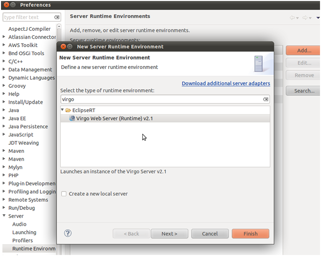
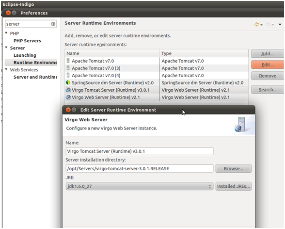
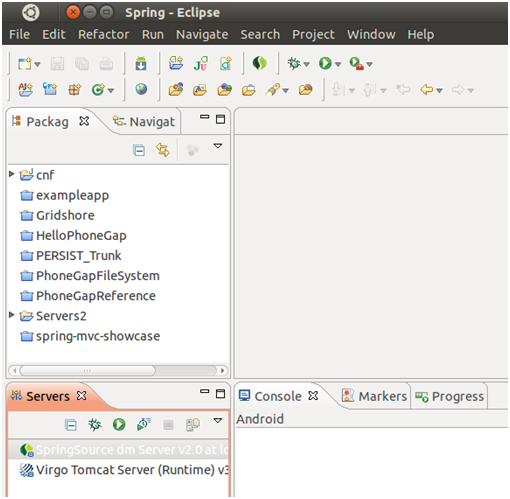

Running and debugging Virgo instances from within the development environment is a handy feature for developers that will save them from switching back and forth across two different contexts (the IDE and the VIRGO server).
To set up this feature, first install the "Eclipse Virgo Tools" package from the repository: http://download.eclipse.org/virgo/milestone/IDE.
In order to do so, go to Help → Install New Software. There you can add the repository with the ADD button and you will find the packet once the repository is added.
To configure Virgo server inside eclipse goto Windows→Preference→Server option from the left panel and then choose runtime environment:

On the right side you may see an option to add servers, click "add" and type the server name "Virgo", then click "next" to type the server name, server installation directory and JRE:

Click "Ok" to finish, you will have your configured instance of Virgo Web Server in the list of available servers:
